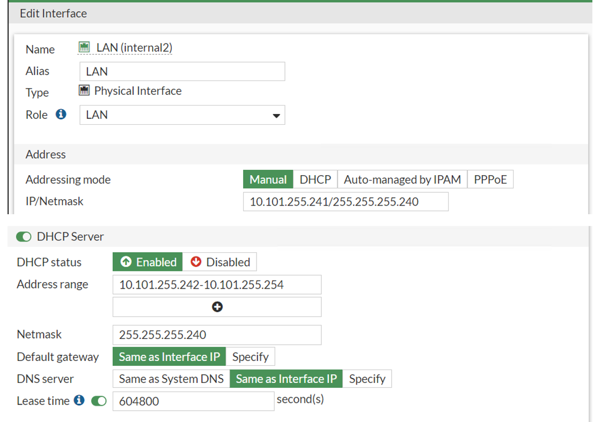

Handleiding CBS350 inrichten met VLAN ontwerp 2023
Inhoud
Algemene inrichting
Achterhaal het IP-adres uit de Fortinet (Onder Dashboard – Network – DHCP). Een nieuwe switch krijgt een DHCP-lease uit de DHCP-pool van de Physical interface van de Fortinet.

Dat wordt dus een IP-nummer met (prefix). (vestigingID).255.xxx (in bovenstaand voorbeeld bijvoorbeeld 10.101.255.242. Login op de switch met Cisco en als wachtwoord Cisco. Maak de Vlans aan. Kijk hiervoor in de IP LIJST.
Start de configuratie wizard
Vlan Omzetten van vlan 1 naar vlan 4

Doe dit voor alle poorten behalve de trunk-poorten!
Accesspoints in VLAN100
Als er AP's aangesloten worden op een switch die in VLAN100 terecht moeten komen dan moeten de betreffende poorten voor VLAN100 op untagged gezet worden.
In onderstaand voorbeeld GE4-GE8.
SSH
Vlans toewijzen kan ook op een snelle manier via SSH Open Putty en verbind naar de switch. Gebruik de inlog gegevens vanaf passwordstate. Config T Definieer de range bijvoorbeeld int range gi1-10 Wissel het vlan om naar het juiste vlan met switchport access vlan 4 Alle poorten zijn in een handomdraai omgewisseld.
Tijd instellen
Zet de switch in de “Advanced mode”. Zet de tijd-instellingen goed.

En voeg als SNTP-server de Firewall toe.

SNMP
Voeg een SNMP Community toe.
Zet SNMP aan (je kunt op de link “SNMP Service” klikken uit bovenstaand scherm.)/ Zet HTTP uit.
Zet gelijk ook SSH aan (nodig voor Putty).
Password Aging
Zet bij Password Strength “Password aging” uit.
DNS
Ga naar "General IP Configuration \ DNS \ DNS Settings"
Stel als DNS server de default gateway in van het VLAN waar de switch zelf in zit.
Dus bijvoorbeeld switch met IP-nr 10.101.100.11 stel dan als DNS server 10.101.100.1 in.
Chronicle Data Forwarder instellen
Zet de instellingen op Advanced (anders kun je de poort niet instellen).
Ga naar "Administration \ System log \ Log Settings en vul bij Max Aggregation Time" 300 in.

Ga dan naar "Remote Log Servers" en vul bij "Log Server IP Address/Name" "10.10.202.24" in en bij UDP poort 10524.
Configuratie opslaan
Sla de config-wijzigingen op door op het save-icoon te klikken. In de Logs is te zien dat de current config is opgeslagen in de flash startup-config.
Hiervoor wordt als File operations Operation Type “Duplicate” gebruikt.